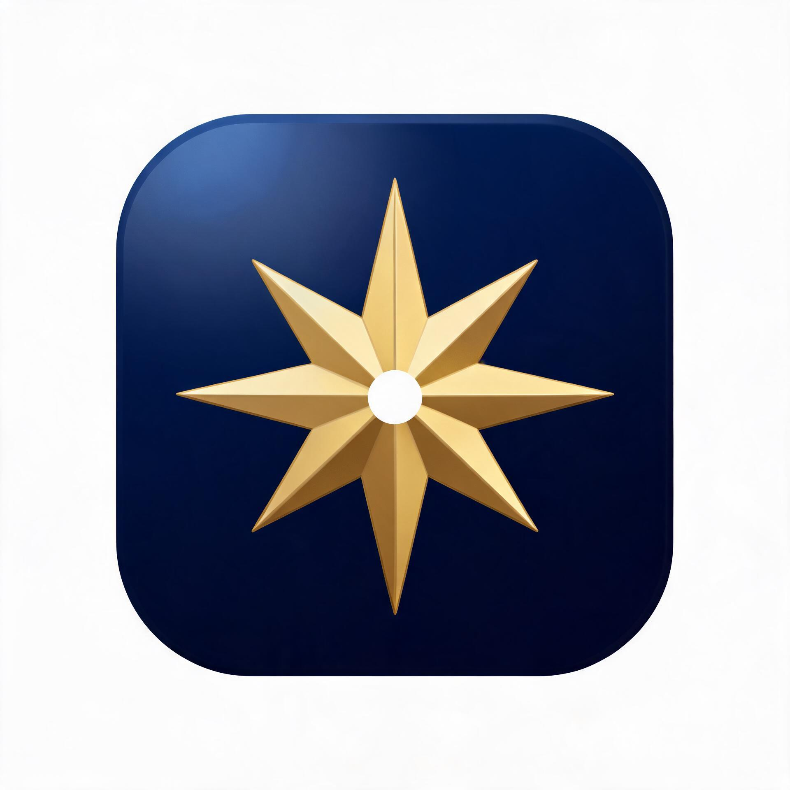
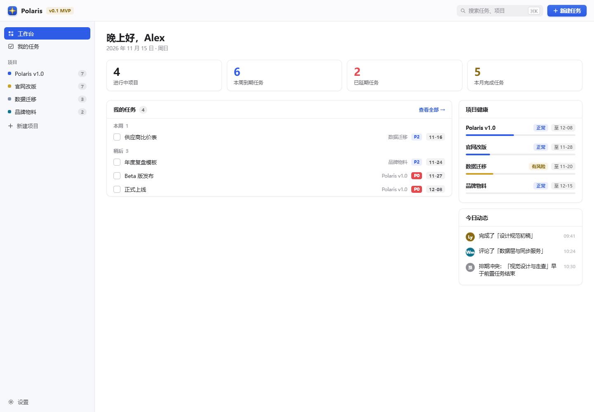

今日视图
今天、本周、稍后三组任务，配合项目健康条与今日动态，先看风险再看细节。
Case 02 / 2026

Polaris · v0.1 MVP / Mac-inspired prototype一个本地优先的项目管理工作台原型：项目、任务、看板、排期和依赖关系，在同一份数据上联动。

任务管理工具很容易变成更多列表。Polaris 从另一个问题开始：当多个人同时推进多个项目时，怎样让状态在一个屏幕里被读懂？
常见的项目管理界面会把任务、时间线和项目风险分在不同页面。对项目负责人来说，真正需要先看到的是：哪个项目有风险、哪件事今天必须做、哪些依赖正在挡住进度。Polaris 把这些信号放回工作台第一屏，再用看板和排期承接细节。
非目标：不做即时通讯，不做文档协作，也不在这个原型里实现权限系统。它们会稀释当前要验证的核心：项目状态的读取效率。
六个模块，共享同一份本地数据。
今天、本周、稍后三组任务，配合项目健康条与今日动态，先看风险再看细节。
把所有项目的待办收在一处，勾选即完成，不用先进入具体项目。
卡片可拖拽换列，显示优先级、负责人、截止日、子任务进度与里程碑。
按阶段分组显示任务条、进度、依赖线和冲突提示，支持日 / 周 / 月切换。
负责人、日期、优先级、描述、子任务和进度在同一处编辑，改完立即反馈到看板与排期。
数据存 localStorage，首次打开自动写入示例项目；设置里可导出 JSON 或重置演示数据。
Polaris 的界面刻意保留了桌面软件的密度：顶栏放全局动作，侧栏放项目，工作区只放当前决策所需的信息。
颜色只承担语义：蓝色表示进行中与主操作，金色表示风险或提醒，红色表示延期与 P0，灰色表示已完成。卡片的圆角、间距和字号保持克制，让用户先读到内容和状态，而不是装饰。
工作台先回答“今天做什么”和“哪个项目有风险”，不把完成任务的操作分散到多个页面。
看板、排期和任务详情共享同一份任务数据；改一处，三个视图同步，不用重复录入。
项目健康条、延期标记和依赖冲突线优先于普通任务，先暴露需要协调的部分。
前端是原生 HTML / CSS / JS，没有构建步骤；状态存在 localStorage，首次打开自动写入示例数据。
界面用 hash 路由在 工作台 / 我的任务 / 看板 / 排期 之间切换。所有视图从同一个 Store 读写，拖拽、勾选、编辑详情和排期条共享派生状态。设置面板提供 JSON 导出和重置演示数据，让原型可以被反复演示。
演示数据只存在当前浏览器，不会上传到任何服务器。案例中的项目名、成员和任务均为内置示例。
Polaris 让我验证了三件事：项目健康比任务数量更值得先看；排期需要把依赖冲突画出来；本地优先让一个原型可以零成本运行和演示。
“先把信息架构和交互状态做对，再考虑把数据放到云端。这个原型刻意没有提前做权限、同步和多人协作，因为那会把问题从‘状态是否可读’变成‘系统是否复杂’。”
下一阶段如果继续做，会先补真实数据导入和多人协作所需的权限、冲突处理与同步策略；在这之前，它更适合作为一个可打开、可操作的产品原型，而不是生产系统。